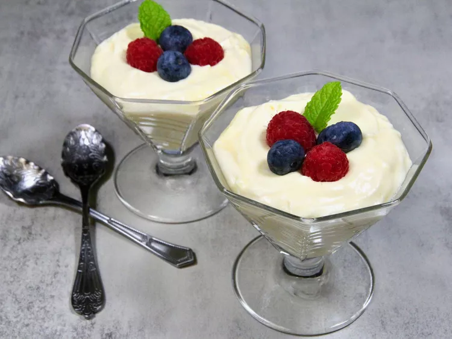

Lemon Mousse

Ingredients
- ½ cup heavy cream
- 1 tablespoon confectioners' sugar
- 1 (4 ounce) package cream cheese, softened
- 1 ½ cups lemon curd
- ½ teaspoon vanilla extract
- 4 tablespoons mixed fresh berries
- 4 fresh mint leaves
Directions
- Beat heavy cream in a chilled glass or metal bowl with an electric mixer until frothy. Add confectioners' sugar gradually, continuing to beat until stiff peaks form, starting on low speed and increasing to high speed, for about 2 minutes; set aside.
- Beat cream cheese in a bowl with an electric mixer until lump free, 1 to 2 minutes. Add the lemon curd and vanilla extract and mix until smooth and creamy, 1 to 2 minutes.
- Fold whipped cream into the lemon mixture until just combined. Divide mousse equally among 4 dessert dishes or ramekins. Chill for at least 1 hour before serving.
- Garnish with fresh berries and mint leaves.
Notes
The mousse is rich, so you may find a smaller serving is appropriate, in which case you'll get 6 servings.